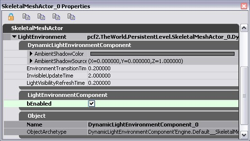

UDN
Search public documentation:
LightEnvironmentsJP
English Translation
中国翻译
한국어
Interested in the Unreal Engine?
Visit the Unreal Technology site.
Looking for jobs and company info?
Check out the Epic games site.
Questions about support via UDN?
Contact the UDN Staff
中国翻译
한국어
Interested in the Unreal Engine?
Visit the Unreal Technology site.
Looking for jobs and company info?
Check out the Epic games site.
Questions about support via UDN?
Contact the UDN Staff
UE3 ホーム > 光源処理とシャドウ > Light Environment (ライト環境)
UE3 ホーム > レベルデザイナー > Light Environments (ライト環境)
UE3 ホーム > ライティングアーティスト > Light Environments (ライト環境)
UE3 ホーム > レベルデザイナー > Light Environments (ライト環境)
UE3 ホーム > ライティングアーティスト > Light Environments (ライト環境)
Light Environment (ライト環境)
ドキュメントの概要: Daniel Wright により作成。
概要
Light Environment の必要性
Light Environment のしくみ
設定
ライト
ライトごとに設定できる関連項目がこちらです。:
bCastCompositeShadow
あるライトをシャドウの方向に影響させたい場合、bCastComposteShadow を True にします。すべてのライト タイプではこのデフォルト設定は True で、Epic 社変更リスト 208754 以前は、ポイントライトとスポットライトでデフォルトで false に設定されていました。これを False に設定したライトを使うと、Light Environment の合成ライティングを変化させることはできますが、合成シャドウへの作用はありません。 bCastCompositeShadow は、ライトマップにないライトが変調シャドウの影響を受けるかどうかも制御します。bCastCompositeShadow=False の動的ライトは、いずれのライトからの変調シャドウの影響も受けません。ライトマップ上のライトは合成ライトマップの一部としてレンダリングされるため、bCastCompositeShadow を無視します。ライトマップ上のすべてのライトは変調シャドウの影響を受けます。CompositeDynamic チャンネル
デフォルトでは、ライトは全て CompositeDynamic (動的合成) のチャンネルにありますが、複合 Light Environment を採用しないプリミティブがある場合は動的ライトのチャンネルにもライトが必要です。CompositeDynamic は、最適化としての動的ライトチャンネルとは別のフラグですのでご注意ください。CompositeDynamic であるライトは多くなりがちですが、動的ではなく、動的ライトチャンネルのライトは、シーンにプリミティブが貼り付けられる度に、その妥当性のチェックが必要です。プリミティブの LightEnvironment (Light Environment)
LightEnvironment (Light Environment) で有効な設定です。例えば、SkeletalMeshActors (骨格メッシュアクタ) で設定できます。
DynamicLightEnvironmentComponent (動的ライト環境コンポーネント)
- AmbientGlow - レベルの光源に加えて付け加えられる環境色です。
- AmbientShadowColor - 環境シャドウのカラーです。
- AmbientShadowSourceDirection - 環境シャドウ ソースの方向です。
- bCastShadows - ライト環境がシャドウをキャストすべきか否かを設定します。
- bDynamic - ライト環境が動的に更新されるべきか否かを設定します。
- bFreeze - ライト環境の状態をフリーズすべきか否かを設定します。(このプロパティは、新たなビルドで編集できなくなりました)。
- BouncedLightingIntensity - シミュレートされる反射光の強さです。直接入射する光源の割合で指定します。
- BouncedLightingDesaturation - シミュレートされる反射光に適用するデサチュレーションのブレンドです。通常、この値を負にして、反射光をより高彩度化 (サチュレート) します。
- bSynthesizeDirectionalLight - 平行光源を使用して環境内のメイン光源を合成するか否かを設定します。
- bSynthesizeSHLight - 球面調和光源を使用して、合成された平行光源によって考慮されなかったすべての光源を合成するか否かを設定します。そうしない場合は、天空光源が使用されます。
- InvisibleUpdateTime - 視覚化されていないアクタのためのライト環境の更新間隔を設定します。
- LightDesaturation - レベルの光源のデサチュレーション率です。これは、カラー化された光源のもとで、チームカラーをともなったキャラクターが目立たせるためのものです。
- LightDistance - オーナーの原点からの、光源を作る距離です。単位は半径です。
- LightShadowMode - 光源に適用するシャドウのタイプです。
- MinTimeBetweenFullUpdates - フルに環境を更新するのに経過しなければならない最小時間量です。
- ModShadowFadeoutExponent - 変調シャドウのフェードアウト曲線を調整する指数です。
- ModShadowFadeoutTime - キャスターが最後に可視的になってから、変調シャドウが完全にフェードアウトするまでの時間です。
- NumVolumeVisibilitySamples - プリミティブのバウンディングボリューム内で使用する可視サンプルの数です。
- ShadowDistance - オーナーの原点を超えて投影するシャドウの距離です。単位は半径です。
- ShadowFilterQuality - ライト環境で使用するシャドウ バッファ フィルタリングのクオリティです。
LightEnvironmentComponent
- bEnabled - LightEnvironmentComponent (Light Environment コンポーネント) を有効にします。LightEnvironmentComponent が有効な場合、DynamicLightEnvironment (動的 Light Environment) は、動的ライトのチャンネルを CompositeDynamic ライトのチャンネルとみなします。これは動的チャンネルのユニークな点で、DynamicLightEnvironmentComponent (動的環境コンポーネント) の取り扱いが変わるチャンネルは他にありません。